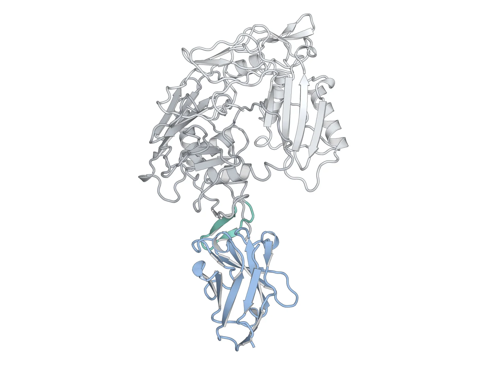
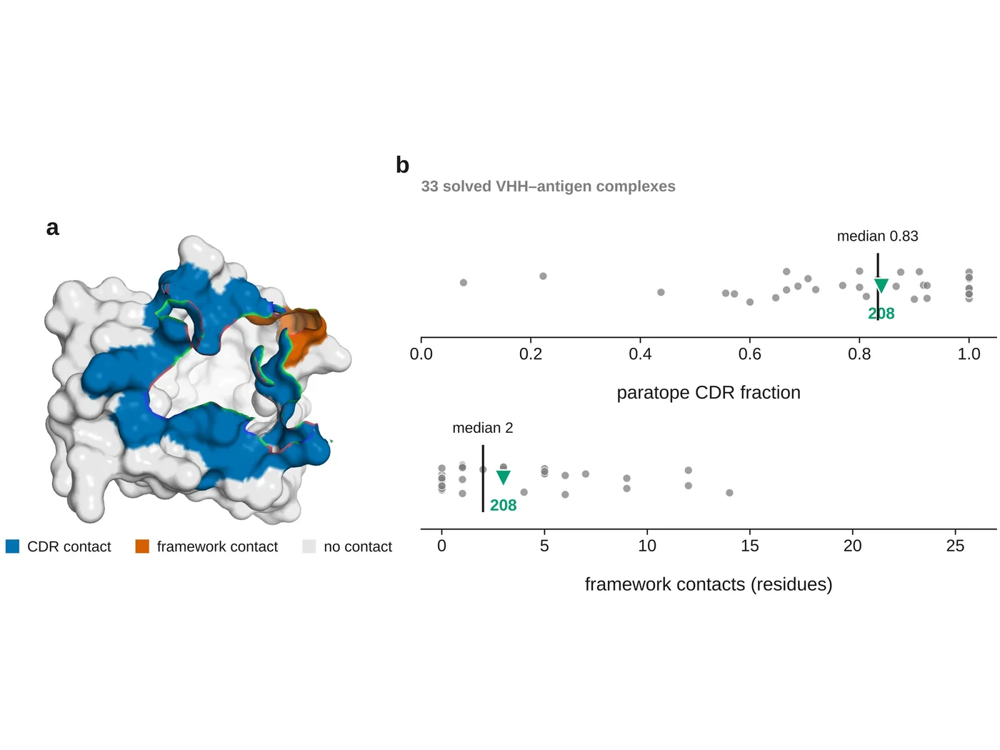
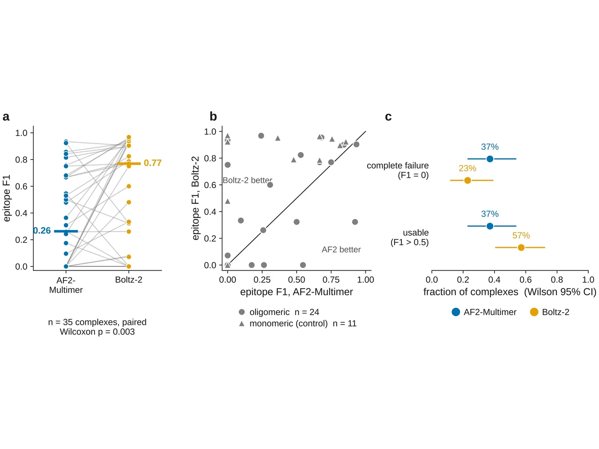
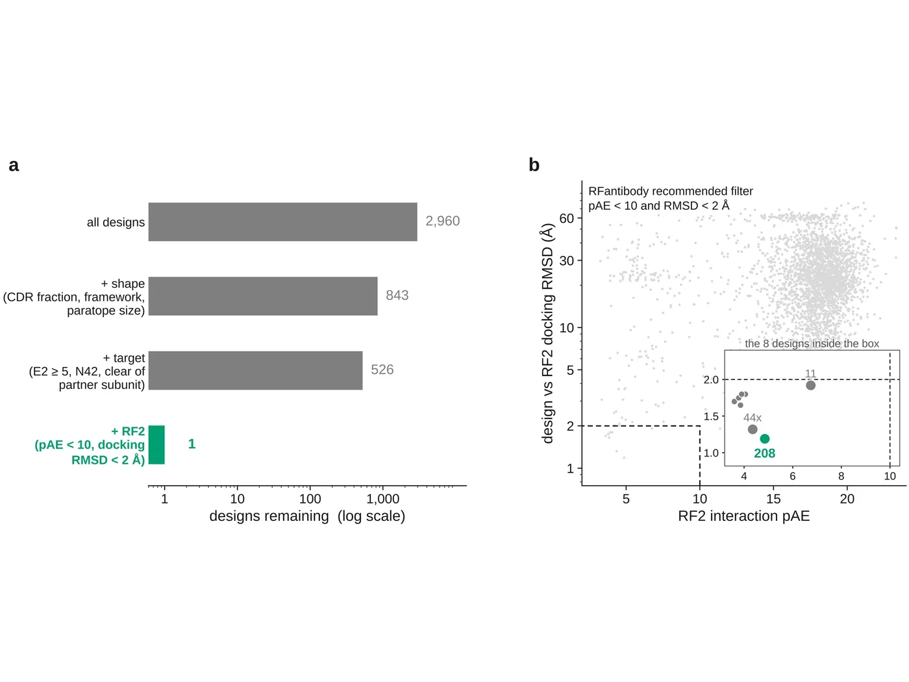
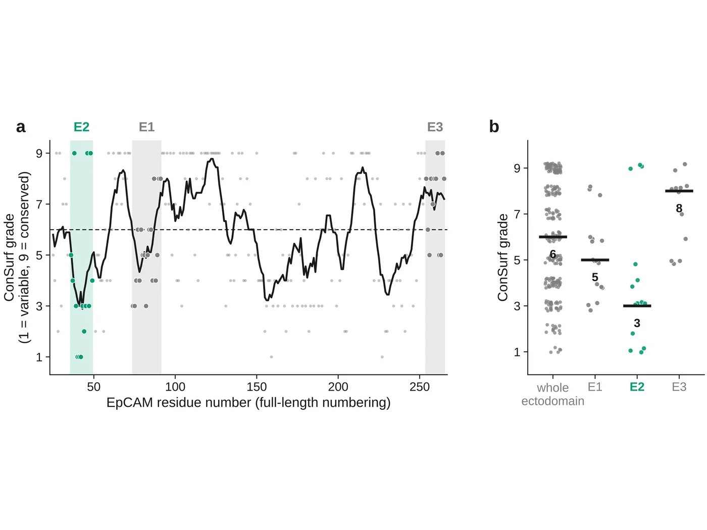
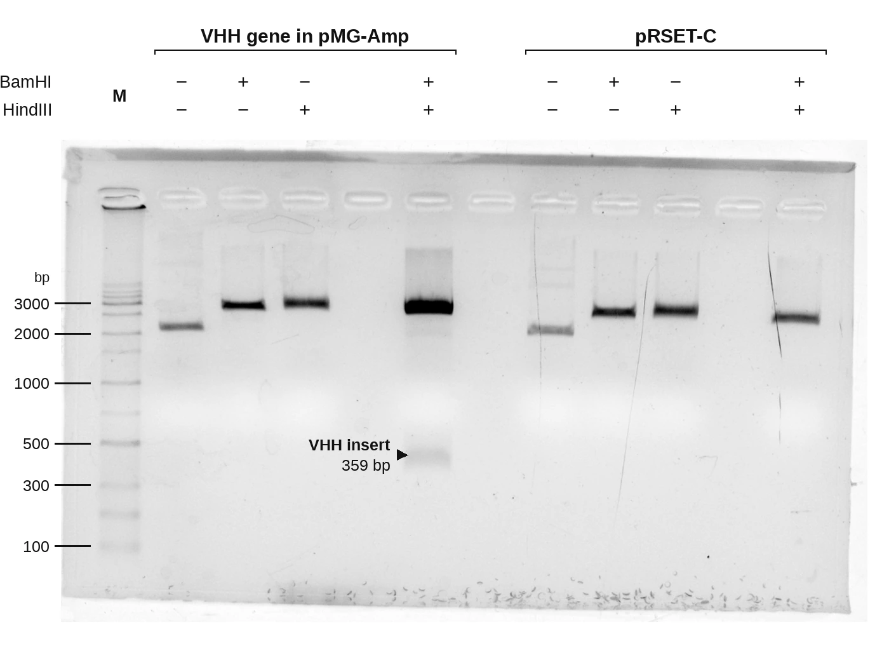
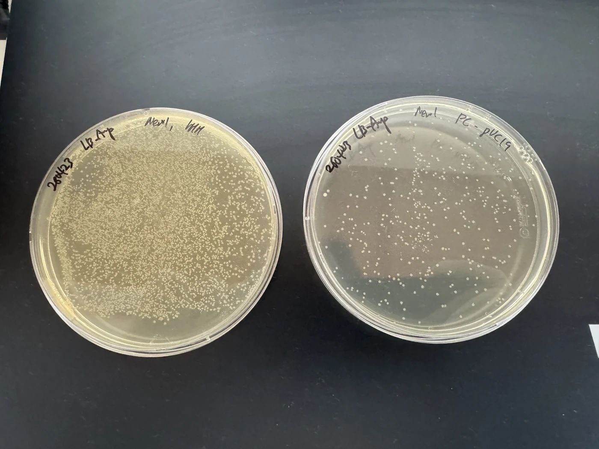
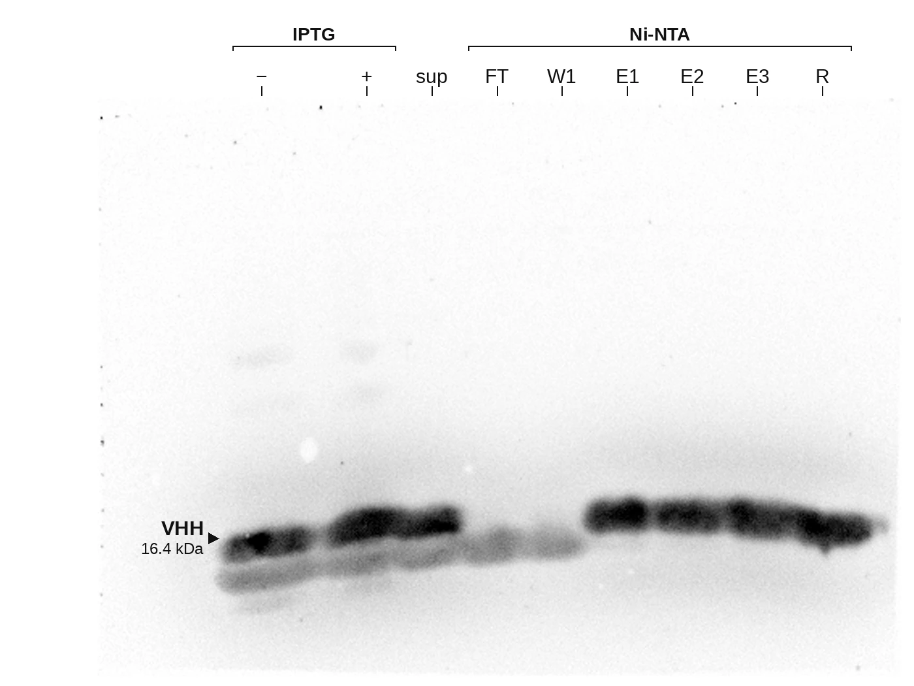

01
Design and Expression of an RFdiffusion-based Anti-EpCAM VHH
A molecular glue that holds a cell without disturbing its state.
- Built
- Designed with RFdiffusion, ProteinMPNN and RoseTTAFold2. In the course of designing VHHs a flaw in AlphaFold2 surfaced, so the designs were re-evaluated with Boltz-2, which proved the more trustworthy of the two — and all 2,960 were screened again before one was carried forward.
- For
- Patterning a scaffold so a chosen cell lands in a chosen place — setting the initial condition, location, from which cell–cell communication and junction formation can be guided.
- Now
- Cloned into pRSET-C, expressed in BL21(DE3), purified over Ni-NTA, confirmed by anti-His6 Western at ~16.4 kDa. Binding assays under way.
- Role
- Carried out alone. Dry lab: epitope selection, the design pipeline, the artifact analysis and predictor benchmark, and filtering all 2,960 designs. Wet lab: everything from cloning through purification.